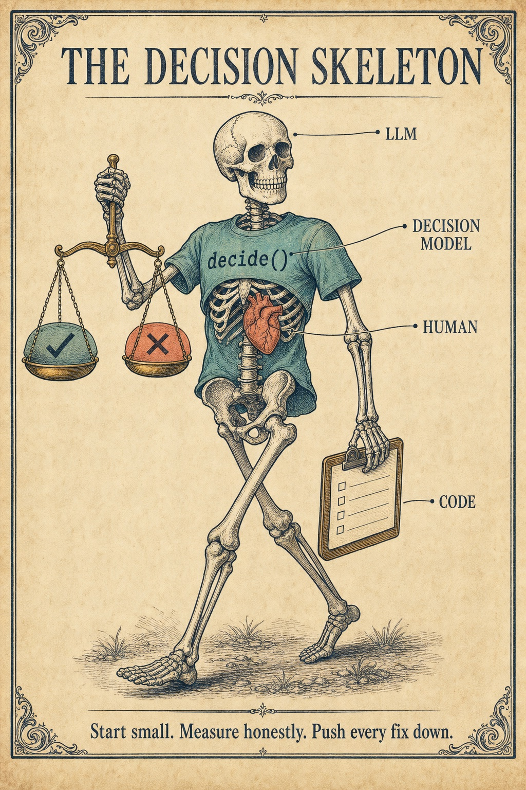

Build A facilitated tutorial for Claude Code
Build your own decision skeleton
Reading about cascades only goes so far. The Decision Skeleton 101 is a tutorial you run inside Claude Code. Claude facilitates: it teaches one idea, makes one small change, asks you to predict the result, runs the check for real, commits, and asks you a question. You end with a small decision cascade you built and measured yourself, with a git history that tells the story one layer per commit.

What you'll build
A decision skeleton is the smallest end-to-end system that makes judgment calls the right way: code for what's computable, a decision model for bounded judgment, an LLM for escalations, a person for rulings. Every escalation pushes a fix back down.
It's the decision-making cousin of the Walking Skeleton tutorial, and it uses the same format: small modules, real checks, and predictions before results.
You'll need
- Claude Code, git, and Node.js LTS (no other installs by default)
- One decision backend by Module 5: Jev, OpenAI's Decisions API, Claude Haiku 5.5, or a local open-weight model
- Optionally an LLM key for the escalation tier. Without one, escalations go to a human queue.
- 5–7 hours across several sittings, and cents in API spend
How to start
git clone https://github.com/RobGruhl/jev-learnings.git
cd jev-learnings/tutorial
claudeThe folder's own CLAUDE.md turns Claude into the facilitator: it greets you, checks your setup, and offers to begin. Your project gets built in tutorial/my-decisions/ as its own git repository, and the tutorial files stay untouched. If Claude doesn't start on its own, say: "Walk me through the Decision Skeleton 101 one module at a time, following the Facilitator Contract in 101-decision-skeleton.md."
Coming back later? Open the folder again and say: "We're partway through the Decision Skeleton 101. Read the git log in my project and continue from the next module." Each module is one commit, so Claude can always find your place.
The modules
| # | Module | You walk away knowing |
|---|---|---|
| 0 | Orient and calibrate | Which mistake in your domain is worse, and by how much |
| 0.5 | Version control and secret hygiene | Why raw model outputs are as private as the data |
| 1 | Write the decision card | Half of "judgment" is usually rules; move it to code |
| 2 | Build and freeze a labeled set | Labels before scores; the held-out set stays locked |
| 3 | The code tier and the baselines | Escalate-everything and rules-only are the bars to beat |
| 4 | The decision contract and a fake backend | One contract, many backends; fail loudly |
| 5 | Ask your first real question | Contrastive choices that name the near misses; pin the model |
| 6 | Grade it honestly | AUC against the question's own concept, from logs |
| 7 | A phrasing ladder | Phrasing moves results; re-grade per model |
| 8 | Thresholds and bands | Fit on dev only; key thresholds to (model, rubric) |
| 9 | The escalation tier | Why the LLM gets only what cheaper tiers can't settle |
| 10 | Novelty and doubt | The model's own "not mine" signals, and what doubt can't see |
| 11 | Close the loop: push a fix down | Every escalation leaves a cheaper fix behind |
| 12 | Held-out validation | Run once, frozen; report misses with an honest bound |
| 13 | Swap the backend | Quality, latency, cost and repeatability as a profile |
| 14 | What it costs | Escalation rate, not the per-call price, drives the bill |
| 15 | Runbook and CLAUDE.md | The invariants an eager agent is tempted to break |
| 16 | Final review: is this a cascade? | Which tiers are real, which numbers are honest, what's next |
How a module feels
- Learn the idea in a few plain sentences, with a link to the matching page on this site.
- Make one small change. Claude proposes and writes it; you see the diff.
- Predict. "What AUC do you expect?" "Will held-out filter more or less than dev?" Claude stops and waits for your answer.
- Run the check for real and compare it with your prediction. Being wrong is where the learning is.
- Commit as
module N: title. - Reflect. Answer a question in your own words before Claude shows the expected answer.
The rules Claude follows
The facilitator contract is strict about the habits this site preaches:
- Never peek at held-out data before Module 12.
- Never claim a number it didn't compute. Every AUC, rate, latency and cost comes from a script that ran in front of you.
- Announce spend before any paid call, and keep a running total.
- Keys never touch git, and your own data goes to a hosted backend only after you say yes to that vendor by name.
- After about three failed attempts at the same check, stop and explain instead of thrashing.
Read the full script: tutorial/101-decision-skeleton.md.